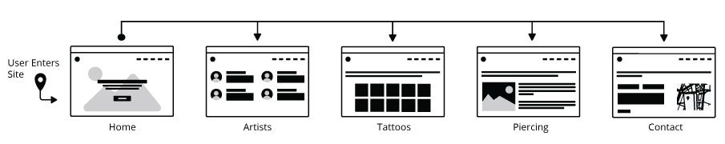
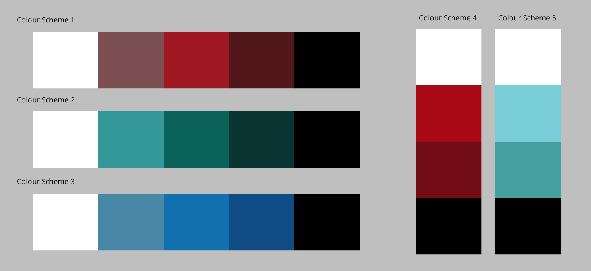
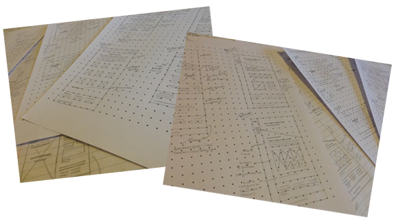
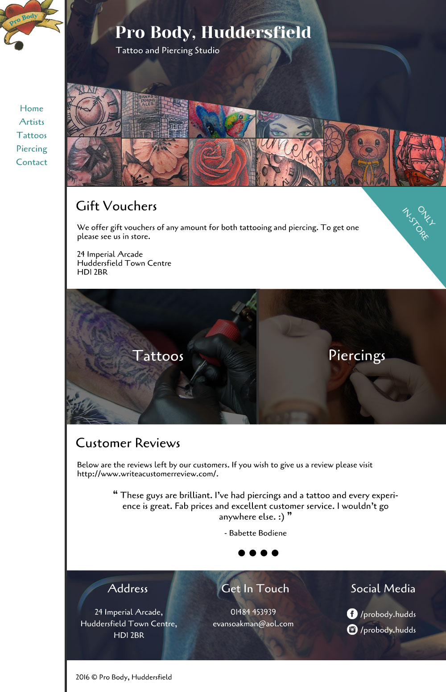
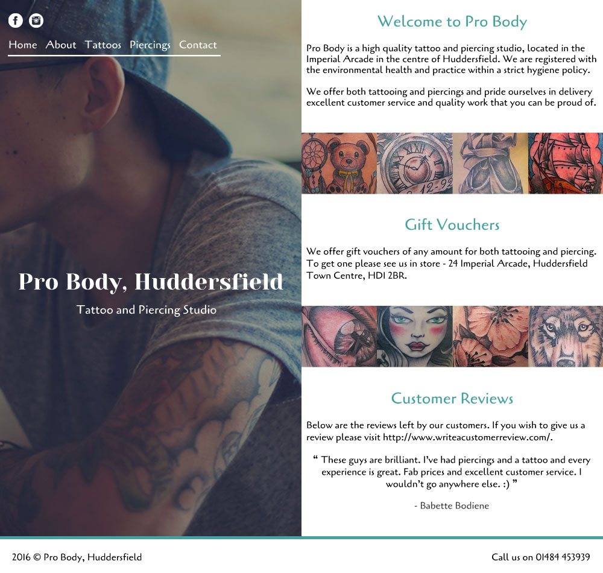
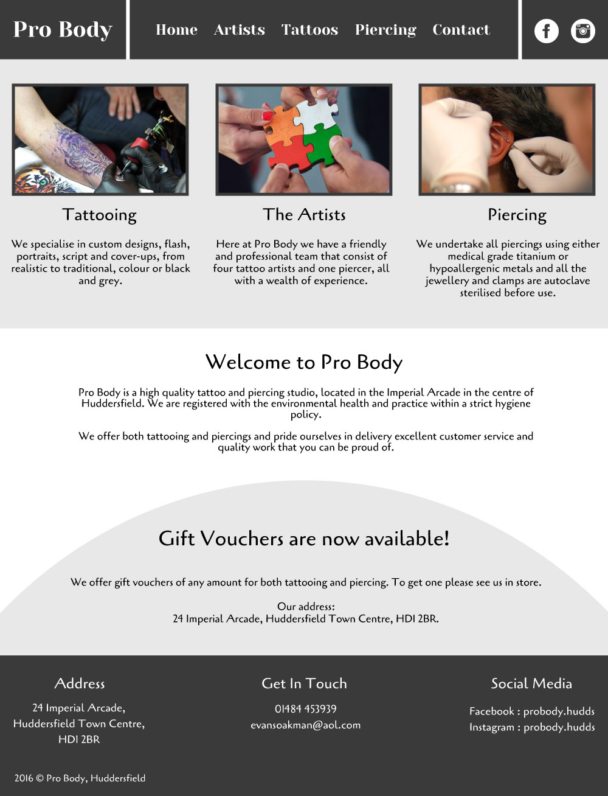
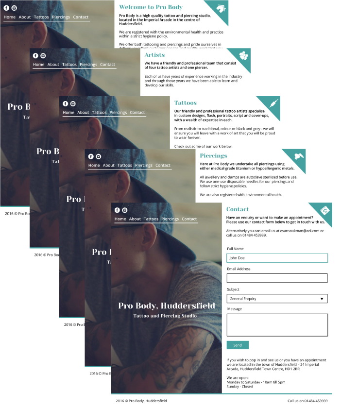
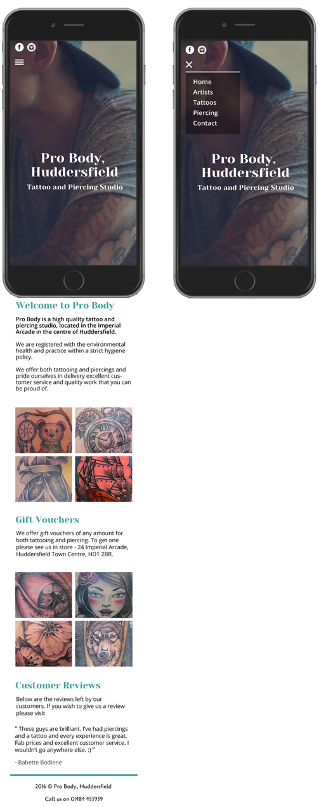
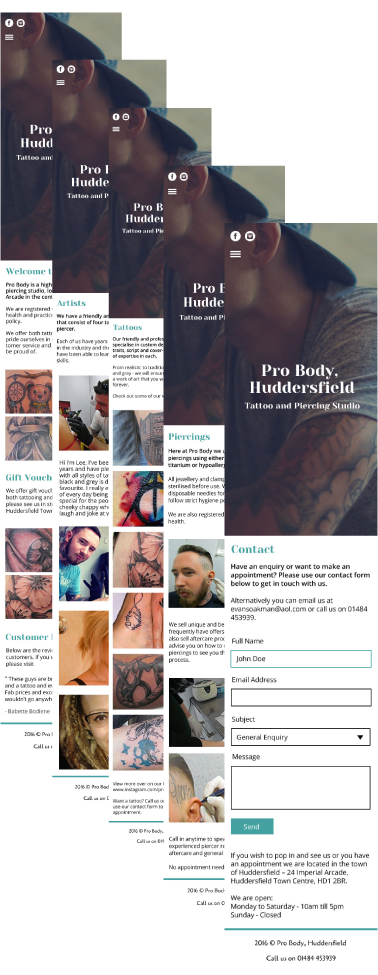

Pro Body, Huddersfield
Project Completion Date: 2nd May, 2016
As part of my Visual Design project I was to create a concept design for an existing website. This involved going through the web design process to design a website that gave a positive first impression and considered current web design trends.
Brief & Specifications
Who are Pro Body?
Pro Body is a small Tattoo and Piercing Studio in Huddersfield. Their tattoo side of the business specialises in custom designs, flash, portraits, script and cover ups while the piercing side prides themselves in only using 100% titanium or hypoallergenic metals. Their core values are providing high quality tattoos and piercings by being a friendly and professional team.
Why does their website need to be redesigned?
I am redesigning their website because currently the website has an inconstant feel to it as well as not providing a good viewing experience to mobile users. The website redesign will allow the content to be presented in a clear and constructive way and will showcase what they do in a visually appealing way. By doing this it will help them gain more enquiries and attract more clients.
Who are their Target Audience?
Their main target audience is 18 to 23 year olds although they do attract younger clientele with their piercing side of business.
The people that will use their website will mainly be prospective clients who are finding out who they are and what they can do. Those potential clients will most likely be comparing them with other studios. It is important for the website to leave them with a positive impression of the tattoo studio.
Site Structure and Technical Specifications
On their current website they have five pages which include; Home, Artists, Gallery, Piercing and Contact. Although there aren’t many page on the website each page does have content within them to provide users with enough information about Pro Body and what they do.
The overall website is static in the terms of that the only user interactions will be the contact form, image galleries and customer reviews.
Another consideration that needs to be made when I am designing this site is that it needs to be responsive so that the viewing experience looks good on any size screen.
User Stories
As a customer…
- I want to be able to see the tattoos and piercing they have done so I know what the quality of work they do is.
- I want to be able to quickly find out who they are, what they do, where they are located and when they are open so I have all the information I need before making my decision to use them.
- I want to be able to see what other people have said about them so I know what I can expect from the service they provide.
- I want to be able to contact them so I can make enquires or see when I can make an appointment with them.
As a member of staff…
- I want to be able to edit the website content so that the information is up to date and correct and new photos of the work we have done can be added.
Design & Functions
Navigation and User Flow Diagram
As this website has very few pages they will all link to each other. This is because all the pages are main pages of the website. This type of navigation is a called Matrix and allows the user to access all the pages on the website from every page.

The User Flow diagram above visually shows each page of the website and how the user will get to each page. As I mentioned before the user will be able to access all the pages on the website from every page. This shows when the user enters the website they will been shown the Home page and from there they will be able to navigate through to the others pages on the website.
Colour Scheme
Choosing the right colour is very important for the look and feel of a website. I actually found picking a colour for this website very hard because my general taste is light colours but looking at most Tattoo Studio website they opt for a dark colour scheme.

I experimented with both dark colours and lighter colours. After spending some time thinking about these colour schemes I chose to use Colour Scheme 5 as the colours will work really well on both light and dark backgrounds.
Fonts
Before designing the website I looked into fonts that could be used on the website. For this project I originally choose to use Yeseva One for the company name and Cagliostro for the body text.
Wireframing
To get my ideas down quickly I wireframed out different layouts. I started out by sketching out a vast amount of home page layouts. I did only the home page first as I believe the home page is the most important page of a website. This is because it is most likely the first page the user will see and will determine if they stay on the website.
I then took the 5 best home page layouts and sketched out the other pages based on that home page design. From there I picked the best 3 wireframes and refined them by pulling ideas from all the layouts I sketched out.

I feel that doing wireframing in this way allows me to get my initial ideas down while giving me room to refine them quickly as the focus is on the structure of the page rather than the content.
Design & Development
I took those 3 wireframe sets and designed them using Adobe Photoshop. This involved designing the layout I’d sketched out, adding the content, colours and custom fonts.
Design 1: Home Page

Design 2: Home Page

Design 3: Home Page

Final Design: Home Page (Desktop)

Final Design: Home Page (Mobile)

I improved the design by changing the font of the body text from Cagliostro to Open Sans as it has less personality. I also gave more space to the elements on the page as well as making everything left-aligned. In addition to this, at the top of every page I added a green triangle with an icon that related to the page. I did this to give a bit more colour to the page and make it more visually appealing.
The Final Design (Sequence)

I am really pleased with how the final website design looked as all the pages are consistent, it shows it will be responsive and has a lot of features while keeping the design simple and easy to navigate.
The hardest part of this project was choosing the colour scheme. I found this hard because I wasn’t sure which colours would work well together and that would fit the website.
Overall, I am really happy with the how the website looks and feels and compared with their original website I feel it is a vast improvement.